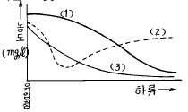
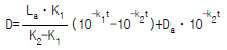

수질환경산업기사 (2003-05-25 기출문제)
1과목: 수질오염개론
1. 용액의 농도에 관한 설명 중 틀린 사항은?
- mole 농도는 용액 1ℓ 중에 존재하는 용질의 gram 분자량의 수를 말한다.
- 몰랄(morali)농도는 규정농도라고도 하며 용매 1000g 중에 녹아 있는 용질의 몰수를 말한다.
- ppm과 ㎎/ℓ 를 염격하게 구분하면 ppm=(mg/L)/ρ sol(ρ sol :용액의 밀도)로 나타낸다.
- 노르말농도는 용액 1ℓ 중에 녹아 있는 용질의 g당량 수를 말한다.
(정답률: 알수없음)

2. 용존산소가 포화될 정도로 증가하고 아질산염이나 질산염의 농도가 증가하는 지대(Whipple의 4지대)는?
- 부패지대
- 활발한 분해지대
- 분해지대
- 회복지대
(정답률: 알수없음)
3. pH 8인 물에서 가장 많이 존재하는 알카리도 물질은?
- CO2
- HCO3-
- CO3-2
- OH-
(정답률: 알수없음)
4. BOD5 가 180㎎/L이고 COD가 320 ㎎/L인 경우, 탈산소계수(K1)의 값은 0.12/day 였다. 이때 생물학적으로 분해 불가능한 COD는? (단, 상용대수 기준)
- 20 ㎎/L
- 80 ㎎/L
- 120 ㎎/L
- 140 ㎎/L
(정답률: 알수없음)
5. 2.2meq(milli-equivalent weight)의 HCO3- 농도를 ppm으로 환산하면 얼마인가?
- 28
- 68
- 134
- 156
(정답률: 알수없음)
6. 물 1ℓ 에 NaOH 0.4g을 녹인 용액의 pH는 ? (단, NaOH = 40, 완전전리기준 )
- 11
- 12
- 13
- 14
(정답률: 알수없음)
7. 20℃에서 어떤 하천수의 최종 BOD 농도는 50mg/ℓ 이고, 5일 BOD 농도는 30mg/ℓ 이다. 하천수의 수온이 10℃일때 하천수의 반응속도 상수 K'는 얼마인가?(단, 20℃범위에서 온도에 따른 수정계수는 Arrenius에 의한 상수로 1.135이다. 또 속도식은 상용대수를 적용한다.)
- 0.0125 d-1
- 0.0225 d-1
- 0.0235 d-1
- 0.0245 d-1
(정답률: 알수없음)
8. 적조현상의 주 원인이 되는 조류를 제거하기 위한 방법으로 황산동을 주입하는 화학적인 방법을 사용하기도 한다. 알칼리도가 40ppm이하일 경우에 주입되는 황산동의 농도로 가장 적절한 것은?
- 5 ∼ 10 ppb
- 10 ∼ 20 ppb
- 0.⑤ ∼ 0.1 ppm
- 0.2 ∼ 0.5 ppm
(정답률: 알수없음)
9. 일반적인 하천에 유기물질이 배출되었을때 하천의 수질을 나타낸 그림이다. 가장 적절한 것은?

- (1)BOD (2)DO (3)SS
- (1)DO (2)BOD (3)SS
- (1)BOD (2)SS (3)DO
- (1)SS (2)DO (3)BOD
(정답률: 알수없음)
10. 호수나 저수지 등 정체된 수역의 오염도(유기물량)를 BOD값 보다 COD값으로 나타내는 이유로 가장 적절한 것은?
- 조류의 양을 고려할 수 있기 때문
- 유기물이나 염류가 많아 이러한 저해요인을 피하기 위해서
- 흐르는 물이 아니기 때문에 용존산소가 적어 BOD를 측정하기 곤란하기 때문
- 수질의 변동이 비교적 적기 때문에 그 차이를 나타내기 위해
(정답률: 알수없음)
11. 우수(雨水)에 대한 설명 중 틀리게 기술된 것은?
- 우수의 주성분은 육수(陸水) 보다는 해수(海水)의 주성분과 거의 동일하다고 할 수 있다.
- 해안에 가까운 우수는 염분함량의 변화가 크다.
- 용해성분이 많아 완충작용이 크다.
- 산성비가 내리는 것은 대기오염물질인 NOx, SOx등의 용존성분 때문이다.
(정답률: 알수없음)
12. 자정계수에 대한 설명이다. 다음 중 잘못된 것은?
- 자정계수란 재포기계수를 탈산소계수로 나눈 값을 말한다.
- 온도가 높아지면 자정계수는 낮아진다.
- 유속이 큰 하천 일수록 자정계수는 높다.
- 자정계수의 단위는 day-1이다.
(정답률: 알수없음)
13. 다음중 하천의 수질관리 모델과 관계가 적은 것은?
- DO SAG - Ⅰ model
- QUAL - Ⅱ model
- WQRRS model
- Vollenweider model
(정답률: 알수없음)
14. 용존산소의 포화농도가 8.2mg/ℓ 인 하천수의 DO농도가 6.0mg/ℓ 이라면, 1일간 유하시 하류에서의 DO농도는? (단, 하천의 최종 BOD는 12mg/ℓ 이고, K1, K2(상용대수) 값은 각각 0.1/day, 0.2/day이며, 하천 유하시 오염물의 유입 및 유출은 없는 것으로 간주한다.)

- 2.7 mg/ℓ
- 3.3 mg/ℓ
- 4.9 mg/ℓ
- 5.3 mg/ℓ
(정답률: 알수없음)
15. 미량의 phenol을 함유한 물을 염소처리하면 음료수에 불쾌한 맛과 냄새를 야기시키는 이유는?
- 염소와 작용하여 trihalomethanes을 생성시키기 때문이다.
- 염소와 작용하여 chlorophenol을 생성시키기 때문이다.
- 염소와 작용하여 H2S를 생성시키기 때문이다.
- 염소와 작용하여 polyolefines를 생성시키기 때문이다.
(정답률: 알수없음)
16. 비료, 가축분뇨등이 유입된 하천에서 pH가 증가되는 경향을 볼 수 있는데, 여기에 주로 관여하는 미생물은 무엇이며, 어떤작용에 의해서 인가?
- Fungi, 광합성
- Bacteria, 호흡작용
- Algae, 광합성
- Bacteria, 내호흡
(정답률: 알수없음)
17. 지하수 수질의 수직분포 내용이 잘못된 것은 ? (단, 수질분포라 함은 동일 수층에서의 상.하의 수질차를 말한다.)
- 산화-환원 전위: 상층부- 고(高), 하층부- 저(低)
- 유리탄소: 상층부- 대(大), 하층부- 소(小)
- 알칼리도: 상층부- 대(大), 하층부- 소(小)
- 염도: 상층부- 소(小), 하층부- 대(大)
(정답률: 알수없음)
18. 폐수속에 [Cl-]가 6× 10-3 mol/L인 용액에서 염화은으로 침전시키고자 할때 [Ag+]은 얼마(mol/L)이상을 투입하면 되겠는가?(단, 염화은의 용해도곱은 1.7× 10-10이다.)
- 1.83× 10-8
- 2.83× 10-8
- 3.52× 10-7
- 4.52× 10-7
(정답률: 알수없음)
19. '기체의 포화 용존농도는 공기 중에서 그 기체의 분압에 비례한다'는 어떤 법칙을 설명한 것인가?
- Dalton의 분압법칙
- Henry의 법칙
- Avogadro의 법칙
- Arrhenius의 법칙
(정답률: 알수없음)
20. 농업용수 수질의 척도로 사용되는 SAR를 구하는데 포함되지 않는 것은?
- Na
- Mg
- Ca
- Fe
(정답률: 알수없음)
2과목: 수질오염방지기술
21. 폐수 유량에서 첨두유량을 구하는 식은?
- 첨두인자 × 최대유량
- 첨두인자 × 평균유량
- 첨두인자 / 최대유량
- 첨두인자 / 평균유량
(정답률: 알수없음)
22. 다음 중 보통 1차침전지에서 부유물질의 침전속도가 작게되는 경우는? (단, 기타의 물리적 조건은 같은 것으로 한다.)
- 부유물질 입자의 밀도가 클 경우
- 부유물질 입자의 입경이 클 경우
- 처리수의 밀도가 작을 경우
- 처리수의 점성도가 클 경우
(정답률: 알수없음)
23. 화학합성을 하는 자가영양계미생물(chemoautotrophics)의 에너지원과 탄소원으로 옳은 것은 ? (순서대로 에너지원, 탄소원)
- 무기물의 산화환원반응, 유기탄소
- 무기물의 산화환원반응, CO2
- 유기물의 산화환원반응, 유기탄소
- 유기물의 산화환원반응, CO2
(정답률: 알수없음)
24. 다음 중 음이온 교환수지의 재생과정을 나타낸 것으로 가장 알맞는 것은?
- 2R-N-SO4+Na2CrO4⇄(R-N)2CrO4+Na2SO4
- 2R-N-OH+H2SO4⇄(R-N)2SO4+H2O
- R-COOH+HCl⇄R-COONa+H2O
- (R-N)2CrO4+2NaOH⇄2R-N-OH+Na2CrO4
(정답률: 알수없음)
25. 하천에서의 대장균이 자연사멸 하는데 36%의 대장균이 10시간 이내에 죽고 59%가 20시간 이내에 죽는다. 사멸 속도가 1차 반응식을 따를 때 대장균이 99% 사멸하는데 걸리는 시간(hour)은?
- 103
- 111
- 120
- 142
(정답률: 알수없음)
26. 폐수처리에 사용되는 호기성 생물학적 처리공정 중 부유 증식 처리공정은?
- 활성슬러지법
- 살수여상
- 회전원판법
- 충진상 반응조(packed-bed reactor)
(정답률: 알수없음)
27. '응집제'에 관한 설명으로 틀린 것은?
- 용수처리에서 가장 널리 사용되는 응집제는 황산 알루미늄과 철염이다.
- 황산알루미늄은 대개 철염에 비해 가격이 저렴하다.
- 황산알루미늄은 철염에 비해 보다 넓은 pH범위에서 적용할 수 있다.
- 보통 용수 처리장에 대한 응집제 선택에는 약품교반 실험에 의한 실험실 연구가 적당하다.
(정답률: 알수없음)
28. 고도 정수처리를 위한 BAC(Biological Activated Carbon)의 장점이라 볼 수 없는 것은?
- 충격부하에 강하다.
- 분해속도가 느린 물질이나 적응시간이 필요한 유기물제거에 효과적이다.
- 정상 상태까지의 기간이 짧다.
- 활성탄 사용시간을 연장시키는 효과가 있다.
(정답률: 알수없음)
29. 유량이 3800m3/day이고 BOD, SS 및 NH3-N의 농도가 각각 20mg/L, 25mg/L 및 23mg/L인 유출수의 질소(NH3-N)를 제거하기 위해 파괴점 염소주입 공정이 이용될 때 1일 염소 투입량은? (단, 투입염소(Cl2)대 처리된 암모니아성 질소(NH3-N)의 질량비는 9:1이고, 최종유출수의 NH3-N 농도는 1.0mg/L 이다.)
- 452 kg/day
- 552 kg/day
- 652 kg/day
- 752 kg/day
(정답률: 알수없음)
30. 슬러지 반송율을 25%, 반송슬러지 농도를 10,000mg/ℓ 일때 포기조의 MLSS 농도는? (단, 유입 SS농도를 고려하지 않음)
- 1,200 mg/ℓ
- 1,500 mg/ℓ
- 2,000 mg/ℓ
- 2,500 mg/ℓ
(정답률: 알수없음)
31. 하천 수질 예측 모델에서는 갈수기 유량을 기준으로 수질을 시뮬레이션 한다. 이 때 갈수기 유량 기준으로 가장 적합한 것은?
- 10년 동안 연속 7일간의 최소 평균유량
- 365일 동안 최소 유량
- 1년중 가장 건조한 5일간의 평균유량
- 5년중 가장 건조한 5일간의 평균유량
(정답률: 알수없음)
32. 가압부상조 설계에 있어서 유량이 2000m3/day인 폐수 내에 SS의 농도가 500mg/ℓ 이다. 공기의 용해도는 18.7㎖/ℓ 이라고 할 때 실제 전달 압력이 3기압인 부상조 가압 탱크가 있다. 이 때 A(공기질량)/S(고형물질량)의 비는? (단, 용존공기의 분율은 0.5이며 반송은 고려하지 않음)
- 0.⑤52
- 0.0431
- 0.0243
- 0.0117
(정답률: 알수없음)
33. 표준활성슬러지법의 설계 F/M비로 가장 알맞는 것은?
- 0.01∼0.02 kg BOD5/kg MLVSS· day
- 0.⑤∼0.1 kg BOD5/kg MLVSS· day
- 0.2∼0.4 kg BOD5/kg MLVSS· day
- 1.1∼1.4 kg BOD5/kg MLVSS· day
(정답률: 알수없음)
34. 유량계의 측정기록에서 연평균 물소비량이 4.24× 106m3인 대규모 공장개발지역 2㎞2이 있다. 총면적의 20%는 녹지이며 녹지에 적용되는 평균 관개용수량은 1.3m3/m2· yr이다. 비관개용수의 85%가 최종적으로 하수관거에 도달한다고 하면 이 지역내에 발생하는 하수유량(m3/hr)은? (단, 연중하수량은 일정하고 기타유입수는 없다.)
- 152m3/hr
- 190m3/hr
- 253m3/hr
- 361m3/hr
(정답률: 알수없음)
35. 폐수의 질산화 반응에 관한 설명과 가장 거리가 먼 것은?(단, 생물화학적 방법 기준)
- 질산화 반응에는 유기질 탄소가 필요하다.
- 암모니아성질소를 아질산성 질소로의 질산화 반응에 관여하는 미생물은 Nitrosomonas이다.
- 질산화 반응에는 O2가 필요하다.
- 질산화 반응은 호기성 폐수처리의 후기에 진행된다.
(정답률: 알수없음)
36. 유입수의 BOD5가 80mg/L, 유출수의 BOD5가 10mg/L인 하수가 활성슬러지 공정으로 처리된다. 폭기조 용적이 1000m3이고 MLSS 2000mg/L, 반송슬러지 SS농도는 8000mg/L, 고형물체류시간은 10일로 운전하고 있다. 방류수의 SS농도는 무시하고 고형물체류시간을 10일로 유지하기 위해 폐기하여야 하는 슬러지(m3/일)의 량은?
- 12.5
- 25
- 50
- 75
(정답률: 알수없음)
37. 생물학적 질소와 인 제거공정의 설계조건에서 2차 침전지와 슬러지 반송을 생략할 수 있는 처리공정으로 가장 적합한 것은?
- A/O공정
- A2/O공정
- UCT공정
- SBR공정
(정답률: 알수없음)
38. 표준 활성오니법으로 처리하는 폐수처리장에서 SV= 30% MLSS는 3000ppm 일 때 SVI 값은?
- 10
- 100
- 120
- 150
(정답률: 알수없음)
39. 산업단지내 발생되는 오수를 오수처리장을 거쳐 하천으로 방류한다. 처리장 유입오수의 BOD농도는 200mg/ℓ , 유량은 20,000m3/day 이고, 인근하천의 유량은 10m3/sec와 BOD농도 0.5mg/ℓ 이다. 하천 방류지점의 BOD농도를 1급수로 유지 하고자 할 때 오수처리장에서 BOD 최소제거효율은? (단, 1급수 BOD농도는 1mg/ℓ 로 한다)
- 약 68 %
- 약 75 %
- 약 82 %
- 약 89 %
(정답률: 알수없음)
40. 다음 미생물중 산성조건에서도 잘 살며 sludge Bulking을 유도하는 것은?
- bacteria
- algae
- fungi
- protozoa
(정답률: 알수없음)
3과목: 수질오염공정시험방법
41. 수질오염공정시험방법상 노말헥산 추출물질과 가장 거리가 먼 것은?
- 휘발되지 않는 탄화수소, 탄화수소유도체
- 그리이스유상물질
- 광유류
- 셀룰로오스류
(정답률: 알수없음)
42. 실험에 관한 용어 설명으로 틀린 것은?
- 냄새가 없다 : 냄새가 없거나 또는 거의 없는 것을 표시하는 것이다
- 시험에서 사용하는 물은 따로 규정이 없는 한정제수 또는 탈염수를 말한다
- 정확히 단다 : 규정된 양의 검체를 취하여 분석용 저울로 0.1㎎까지 다는 것을 말한다
- 감압이라 함은 15mmH2O 이하를 말한다
(정답률: 알수없음)
43. BOD를 측정할 때의 전처리로써 가장 알맞는 내용은?
- 용존산소량이 과포화일 경우 수온을 23-25℃로 올리고 30분간 통기한다.
- 수온이 5℃인 하천수는 23℃정도로 가온해서 30분간 통기후 20℃로 한다.
- pH가 7을 벗어나는 시료는 황산, 암모니아수로 중화 하여 사용한다.
- 일반적으로 잔류염소를 함유한 시료는 BOD용 식종 희석수로 희석하여 사용한다.
(정답률: 알수없음)
44. 수질오염공정시험방법상 크롬을 측정하기 위하여 흡광광도법을 사용하고자 발색제인 디페닐카르바지드 용액을 조제하려면 디페닐카르바지드를 어느 물질에 용해시키는가?
- 알콜
- 톨루엔
- 사염화탄소
- 아세톤
(정답률: 알수없음)
45. 염소이온의 질산은 적정법에서 종말점의 색깔은?
- 엷은 갈색
- 엷은 적자색
- 엷은 적황색
- 엷은 청회색
(정답률: 알수없음)
46. 0.025N - KMnO4 500㎖를 조제하기 위하여 소요되는 과망간산칼륨의 량은? (단, KMnO4 = 158)
- KMnO4 0.329g
- KMnO4 0.395g
- KMnO4 0.985g
- KMnO4 1.975g
(정답률: 알수없음)
47. 순수한 물 100mℓ 에 에틸알코올(비중0.79) 80mℓ 를 혼합하였을 때 이 용액중의 에틸알코올 농도(w/w%)는?
- 70.4%
- 63.2%
- 38.7%
- 32.9%
(정답률: 알수없음)
48. P공장 폐수의 COD를 측정하기 위하여 검수 25mL에 증류수를 가하여 100mL로 하여 실험한 결과 0.025N-KMnO4가 10.1mL 최종소모되었다. 이 공장의 COD는? (단, 공시험의 적정에 소요된 0.025N-KMnO4는 0.1mL이고 0.025N-KMnO4의 역가는 1.0 이다)
- 20 mg/L
- 40 mg/L
- 60 mg/L
- 80 mg/L
(정답률: 알수없음)
49. 95% 황산(비중 1.84)의 N농도는?
- 10.7
- 25.5
- 35.7
- 40.5
(정답률: 알수없음)
50. 진콘(Zincon)법으로 아연을 정량할 때 아연시안 착염의 분해제로 작용하는 시약은?
- 수산화나트륨 용액
- 염화칼륨 용액
- 디티죤 용액
- 포수(抱水)클로랄 용액
(정답률: 알수없음)
51. 100mℓ 의 시료를 가지고 부유물질을 측정한 결과 다음과 같은 결과를 얻었다. 전체 부유물질(건조된 고형물기준) 중에서 휘발성 부유물질이 차지하는 %(무게기준)는? (단,-용기의 무게 = 18.4623g, -건조시킨후:(용기 + 건조된 고형물)무게 = 18.5112g -휘발시킨후:(용기 + 재)의 무게 = 18.4838g )
- 56.0%
- 63.8%
- 72.3%
- 83.8%
(정답률: 알수없음)
52. 페놀류의 정량은 미리 증류한 검수를 pH10으로 조절한후 이것에 4-아미노안티피린 용액과 페리시안 칼륨 용액을 가하여 안티피린 색소를 발색시켜 그흡광도를 측정하고 있는데, 이 때 검수를 pH 10으로 조절하는 완충액은?
- KCl + KOH
- NH4Cl + Na2SO3
- NH4Cl + NH4OH
- NaCl + Na2S2O3
(정답률: 알수없음)
53. 가스크로마토 그래프 분석에 사용하는 검출기중 유기질소 화합물 및 유기염소 화합물을 선택적으로 검출할 수 있는 것으로 가장 적당한 것은?
- 전자포획형검출기
- 불꽃광도형 검출기
- 열전도도검출기
- 불꽃열이온화검출기
(정답률: 알수없음)
54. 다음 중 인산염인의 측정법(흡광광도법)으로 맞는 것은?
- 카드뮴구리환원법
- 디메틸글리옥심법
- 에브럴 - 노리스법
- 염화제일주석 환원법
(정답률: 알수없음)
55. DO 측정시 End point(종말점)에 있어서의 액의 색은? (단, 윙클러-아지드나트륨 변법 기준)
- 무색
- 미홍색
- 황색
- 청남색
(정답률: 알수없음)
56. 수질오염공정시험방법 중 이온크로마토그래피법으로 정성 및 정량분석에 이용할 수 없는 성분은?
- CN-
- NO2-
- SO42-
- Br-
(정답률: 알수없음)
57. 원자흡광 광도계의 광원램프로 원자흡광 스펙트럼선의 선폭보다 좁은 선폭을 갖고 휘도가 높은 스펙트럼을 방사하여 많이 사용되는 것은?
- 열음극램프
- 중공음극램프
- 방전램프
- 텅스텐램프
(정답률: 알수없음)
58. Winkler 법중 Azide 변법에 의한 DO 측정에서 Azide 첨가는 어떤 성분의 방해를 억제하기 위한 것인가?
- Cl-
- NO2-
- I2
- Fe
(정답률: 알수없음)
59. 용액중 CN-농도를 5.2㎎/ℓ 로 만들려고 하면 물 1000ℓ 에 NaCN 몇 g을 용해시키면 되는가? (단, Na 원자량 : 23)
- 6.8g
- 7.8g
- 9.8g
- 11.8g
(정답률: 알수없음)
60. [ 원자흡광광도법을 이용한 시험방법은 시료를 적당한 방법으로 해리시켜 중성원자로 증기화하여 생긴 ( ① )가 ( ② )을 투과하는 특유 파장의 빛을 흡수하는 현상을 이용한다 ] ( )안에 알맞는 내용은? (순서대로 ① - ②)
- 여기상태의 원자 - 원자 이온층
- 여기상태의 분자 - 분자 증기층
- 바닥상태의 분자 - 분자 이온층
- 바닥상태의 원자 - 원자 증기층
(정답률: 알수없음)
4과목: 수질환경관계법규
61. 특정수질유해물질과 거리가 먼 것은?
- 구리(동) 및 그 화합물
- 셀레늄 및 그 화합물
- 디클로로메탄
- 주석 및 그 화합물
(정답률: 알수없음)
62. 공공수역에 다량의 토사를 유출시킨자에 대한 벌칙으로 적합한 것은?
- 100만원이하의 벌금
- 200만원이하의 벌금
- 1년이하의 징역 또는 500만원이하의 벌금
- 2년이하의 징역 또는 1000만원이하의 벌금
(정답률: 알수없음)
63. 폐수처리방법이 생물화학적 처리방법인 방지시설의 가동 개시를 5월 1일에 한 경우 시운전기간으로 적절한 것은?
- 가동개시일부터 30일
- 가동개시일부터 50일
- 가동개시일부터 70일
- 가동개시일부터 90일
(정답률: 알수없음)
64. 환경친화적기업 지정에 관한 설명으로 틀린 것은?
- 산업자원부장관이 인정한 환경경영체제 인증기업에 대하여는 환경친화기업 지정시 우선 고려하여야 한다
- 환경부장관은 환경친화기업으로 지정된 사업장에 대하여 대통령령이 정하는 바에 따라 허가를 신고로 대신할 수 있다.
- 환경친화적기업 지정에 관한 세부사항은 공업진흥 청장과 협의하여 환경부령으로 정한다.
- 환경친화기업으로 지정받고자 하는 사업자는 환경부령이 정하는 바에 따라 지정신청을 하여야 한다.
(정답률: 알수없음)
65. 폐수수탁처리업자의 시설현황으로 옳지 않은 것은?
- 폐수운반장비는 용량 2m3 이상의 탱크로리, 1m3 이상의 합성수지제 용기가 고정된 차량 또는 고정식 파이프라인이어야 한다.
- 폐수저장시설은 폐수처리시설능력의 2배 이상을 저장할 수 있어야 한다.
- 처리시설의 능력은 1일 60m3 이상이어야 한다.
- 폐수운반차량은 황색으로 도장한다.
(정답률: 알수없음)
66. 다음 중 오염도 검사를 수행하는 기관이 아닌 것은?
- 국립환경연구원 및 그 소속기관
- 환경관리기술공단 및 그 소속기관
- 특별시· 광역시 및 도의 보건환경연구원
- 유역환경청 및 지방환경청
(정답률: 알수없음)
67. 공공수역 중 공공용에 사용되는 수로에 해당하지 않는 것은?
- 지하수로
- 운하
- 공업용수로
- 농업용수로
(정답률: 알수없음)
68. 부과금산정에 적용하는 일일유량을 구하기 위한 측정유량의 단위는?
- m3/hr
- m3/min
- L/hr
- L/min
(정답률: 알수없음)
69. 방류수수질기준 초과율이 60%이상 70%미만일 때 적합한 부과계수는?
- 2.1
- 2.2
- 2.3
- 2.4
(정답률: 알수없음)
70. 개선명령을 받지 아니한 사업자가 개선을 위해 개선계획서를 제출한 경우에도 초과부과금 부과시 적용되는 항목으로 적절한 것은?
- 연도별 부과금산정지수
- 사업장 규모에 따른 부과금액
- 배출허용기준초과율별 부과계수
- 위반횟수별 부과계수
(정답률: 알수없음)
71. 호소안의 쓰레기 수거 의무자는?
- 수면관리자
- 당해 호소를 관할하는 시장· 군수· 구청장
- 지방환경관서의 장
- 시· 도지사
(정답률: 알수없음)
72. 수질오염방지시설중 생물화학적 처리시설이 아닌 것은?
- 안정조
- 돈사톱밥발효시설
- 폭기시설
- 살균시설
(정답률: 알수없음)
73. 폐수종말처리시설의 유지, 관리기준에 따라 처리시설의 관리, 운영자가 실시하여야 하는 방류수 수질검사의 시행 횟수기준으로 적절한 것은?(단, 폐수종말처리시설의 규모는 1000m3/일 이며 방류수 수질이 현저하게 악화되지 않는 경우임)
- 월 1회이상
- 월 2회이상
- 주 1회이상
- 수시
(정답률: 알수없음)
74. 수질환경 기준중 하천의 전 수역에 걸쳐 사람의 건강보호를 위하여 설정된 기준중 맞는 것은?
- 6가 크롬 : 0.01 mg/ℓ 이하
- 카드뮴 : 0.⑤ mg/ℓ 이하
- 납 : 0.1 mg/ℓ 이하
- 비소 : 0.5 mg/ℓ 이하
(정답률: 알수없음)
75. 폐수처리업에 종사하는 기술요원을 교육하는 기관으로 적절한 곳은?
- 환경공무원교육원
- 환경보전협회
- 국립환경연구원
- 환경관리공단
(정답률: 알수없음)
76. 특정수질유해물질이 포함된 오염물질을 1일 20m3 배출하는 사업장에서 두어야 하는 환경관리인 자격기준으로 가장 적절한 것은?
- 수질환경기사 1인이상
- 2년이상 수질분야 환경관련업무에 직접 종사한 자 1인이상
- 환경기능사 1인이상
- 피고용인중에서 임명하는 자 1인이상
(정답률: 알수없음)
77. 1년 6개월동안 방류수수질기준을 초과하지 아니한 사업자에게 배출부과금 100만원이 부과된 경우 감경 금액은?
- 10만원
- 20만원
- 30만원
- 40만원
(정답률: 알수없음)
78. 폐수의 원래상태로는 처리가 어려워 희석하여야만 오염물질의 처리가 가능하다고 인정을 받고자 할 때 첨부하여야 하는 자료와 가장 관계가 적은 것은?
- 처리하려는 폐수농도
- 희석처리의 불가피성
- 희석배율
- 희석방법
(정답률: 알수없음)
79. 방지시설의 설치면제기준에 적합한 전량 위탁처리하기에 부적합한 폐수는?
- 지정폐기물이 아닌 해양오염방지법 규정에 의한 선박에서 발생되는 폐수
- 방지시설설치외의 방법으로 오염물질의 적정처리가 가능하여 방지시설을 설치하지 아니한 배출시설에서 부득이 하게 배출하여야 하는 폐수
- 성상이 다른 폐수와 달라 방지시설에 유입될 경우 적정처리가 어려운 폐수로 50m3/일을 초과하는 폐수
- 방지시설의 개선 또는 보수등와 관련하여 배출되는 폐수로서 시· 도지사와 사전협의된 기간동안만 배출되는 폐수
(정답률: 알수없음)
80. 최초로 배출시설을 설치한 경우에 사업자가 환경관리인을 임명신고하는 시기로 알맞는 것은?
- 가동개시신고와 동시에
- 환경관리인을 임명한 날부터 5일이내
- 환경관리인을 임명한 날부터 10일이내
- 환경관리인을 임명한 날부터 30일이내
(정답률: 알수없음)